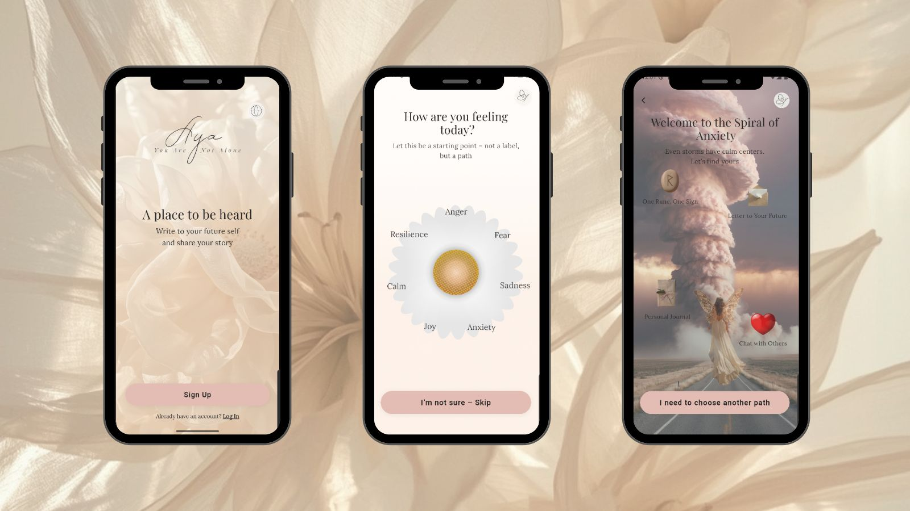
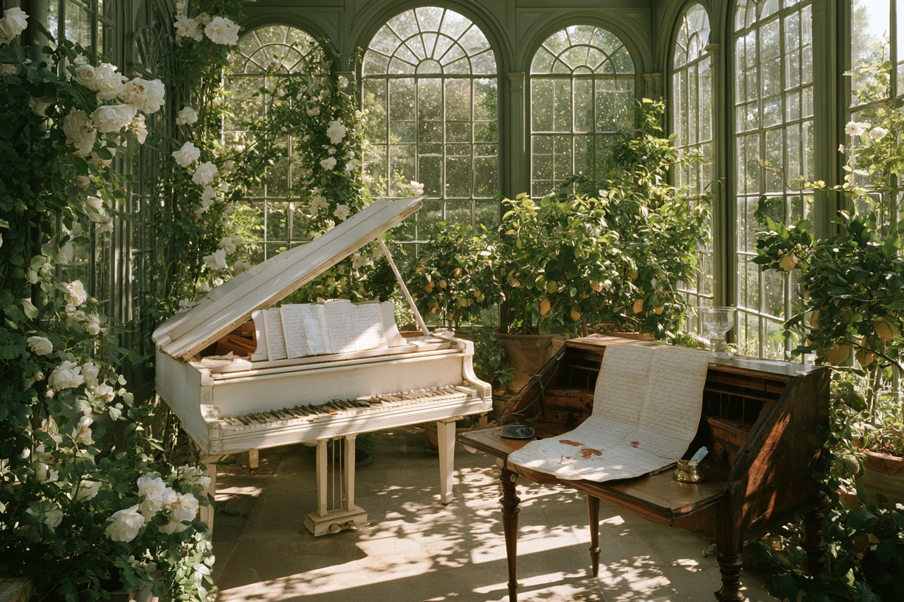
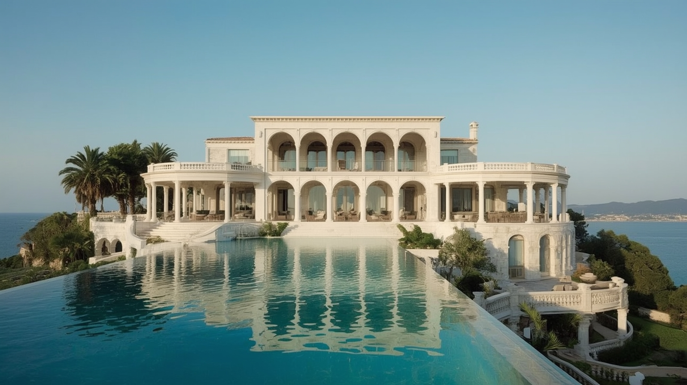
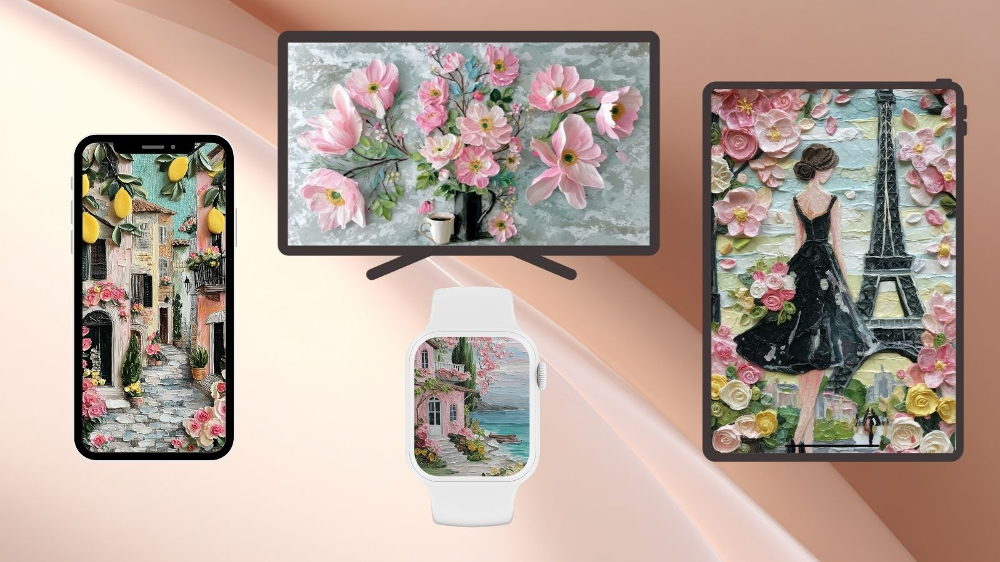

A place to be heard
A quiet space to bring what you are feeling — not to diagnose it or rush toward an answer, but to recognise it and choose a gentler next step.
Coming 2027Morning · Water · Silence
A quieter room within the same house — letters, the forthcoming Aya app and small digital collections for the inner life.
The author's world
The author's letters

Latest letter · 23 April 2026
It took less than a minute. She changed one image on her phone — and something shifted. Not the day, but the way it felt.
Open the letterAya is growing slowly, on purpose. Two quiet places are taking shape — one to carry with you, one to return to.

A quiet space to bring what you are feeling — not to diagnose it or rush toward an answer, but to recognise it and choose a gentler next step.
Coming 2027
One day Aya will have a roof — light, silence and rooms where you do not have to explain anything. A place to meet, to rest, to arrive from somewhere far.
Coming 2030A book and a set of wallpapers made to live beyond the scroll — on a screen, beside the bed or inside an ordinary day.

A 56-page guide to life after a breakup: the nervous system, attachment and why letting go takes time. In English and Spanish.

Petals, slow light and the smell of a room with the window just opened — a set of soft wallpapers for the screens that stay close to you.
Write to Aya
If you would like to share your story, a thought or a quiet wish, Aya reads every note.
Write to Aya